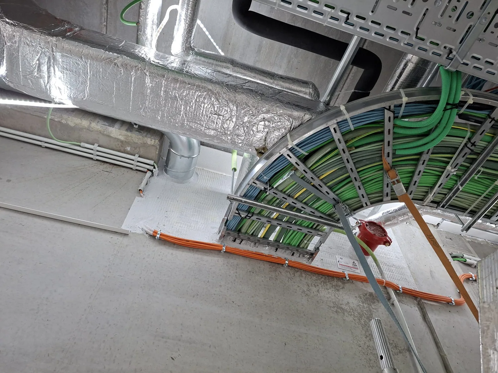
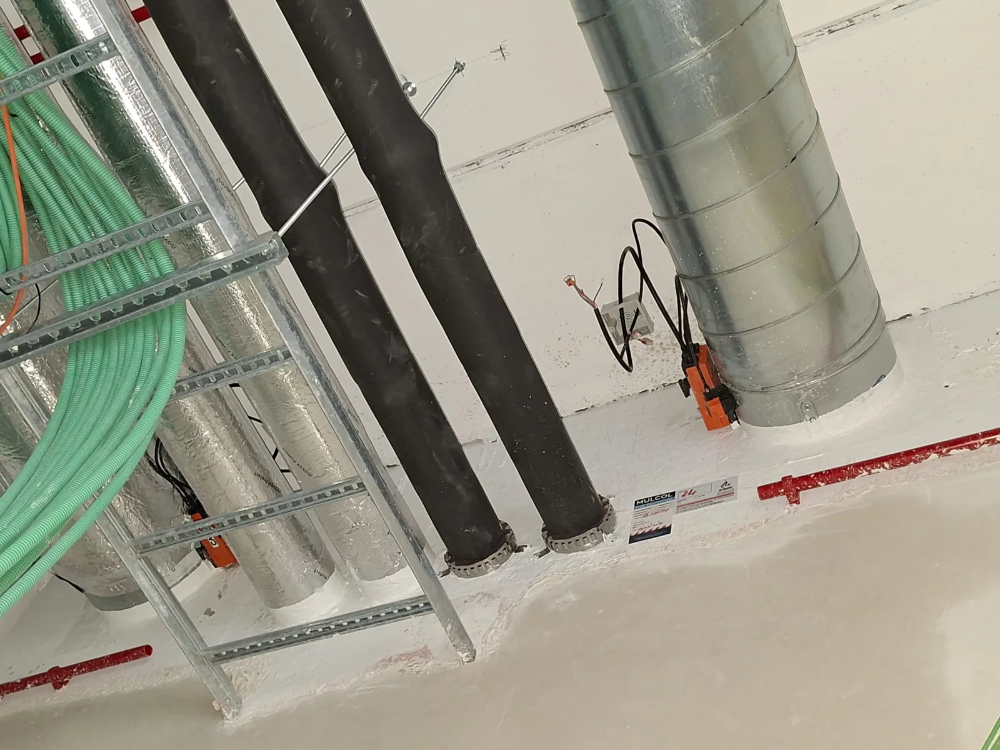
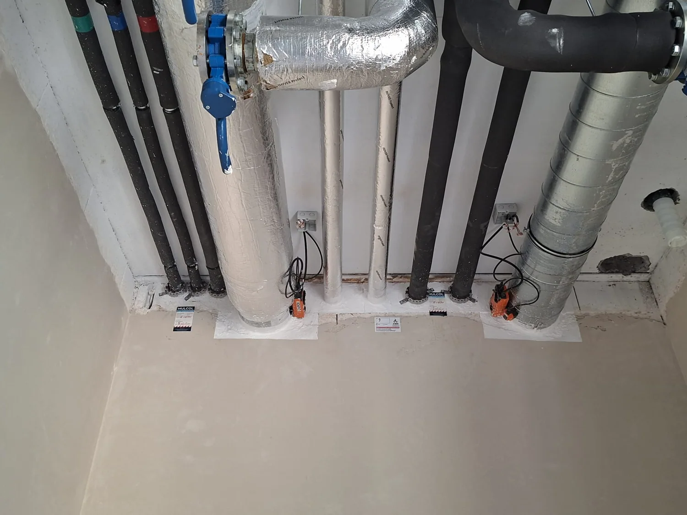

Discuss
Your project, its services and the required fire resistance.

AB FIRESTOP · PASSIVE FIRE PROTECTION SPECIALISTS
Specialists in firestopping and fire compartmentation. From service penetrations to carefully finished fire compartments.
Fire safety matters
Fire safety is essential in every building. AB Firestop specialises in firestopping, compartmentation and protective systems in accordance with applicable standards and regulations.
We help prevent fire, smoke and heat from spreading uncontrollably through service penetrations or structural elements.
Our expertise
From a service penetration to
the protection of load-bearing structures.
Every penetration. Properly sealed.
Limit the spread. Protect the building.
Greater fire resistance for structural steel.
Flexible in movement. Reliable in protection.
Protection around the installation.
Fire safety goes beyond installation.

Why AB Firestop
We combine specialist installation with smooth coordination on site.
A clear approach
Your project, its services and the required fire resistance.
The system solution and coordination on site.
Careful installation, with attention to every junction.
Clear documentation and technical advice.
Our projects

On-site views of junctions around pipes and building services.
View project
Site details of service penetrations and finishes around pipes and ducts.
View project
A closer look at penetration seals around cable trays, pipes and ventilation ducts.
View project
Building services and enclosures in an industrial setting.
View project
Detailed views of pipe penetrations, cable trays and junctions between building services and the structure.
View projectDetails matter after installation too
System selection, application and documentation go hand in hand. Discover how we support your project through handover.
Documentation & handover
Good to know
Have a specific question about your project?
We are happy to help you find a solution.
We specialise in firestopping, compartmentation, intumescent coatings, fire-resistant joints and enclosures. We also provide inspection and repairs.
Yes. Alongside new installations, we provide compartmentation for renovations and inspect and repair existing firestopping.
For firestopping, we work with EI30, EI60, EI90 and EI120. The structure, application and certified system determine what is possible and required.
We coordinate installation with the contractors involved, including HVAC, electrical and plumbing installers. Clear documentation forms part of the handover.
Your project, properly protected